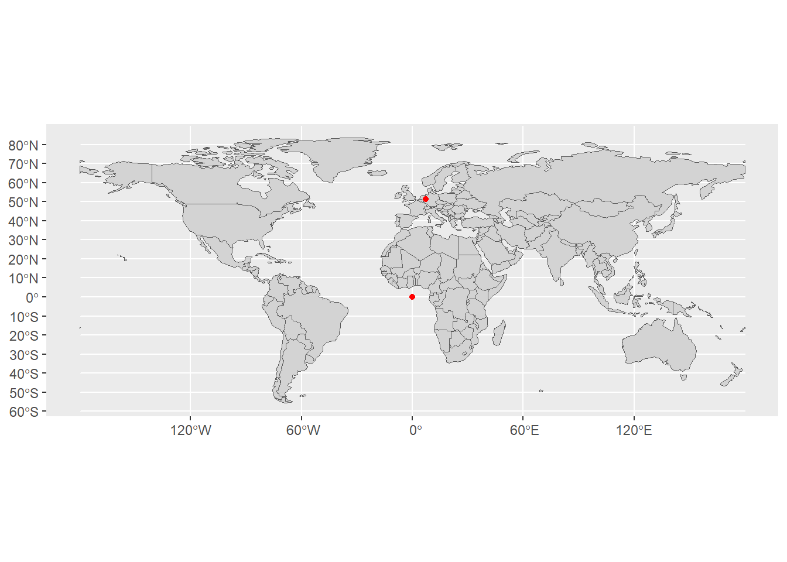
19 Räumliche Daten
20 Einführung
20.1 Räumliche Daten
Quelle: http//landportal.org
- Viele Daten haben räumlichen Bezug
- Klassische Anwendung von Geoinformationssystemen (GIS)
- Programme: ArcGIS (kommerziell) und QGIS (Open Source)
- Verarbeitung räumlicher Daten schon seit langem auch in R
- Gute Integration in ggplot2: Paket sf (simple feature)
20.2 Geographische Daten: Einzelne Punkte

Koordinatensystem mit Breiten- und Längengraden
- Koordinaten eines Punktes mit Breitengrad (latitute) und Längengrad (longitude)
- Angaben im Winkelmaß
- Breitengrad ab Äquator (zwischen -90° und 90° oder mit Zusatz N/S)
- Längengrad ab Nullmeridian (zwischen -180° und 180° oder mit Zusatz O/W)
- Schreibweise manchmal im Sexagesimalsystem (Winkelminuten und Sekunden)
- Koordinaten des Gipfels der Zugspitze: 47°25′16″N, 010°59′7″O
- Die Erde ist keine Kugel
- Referenzellipsoid, häufig World Geodetic System 1984 (WGS 84)
20.3 GPS-Koordinaten Hochschule Bochum
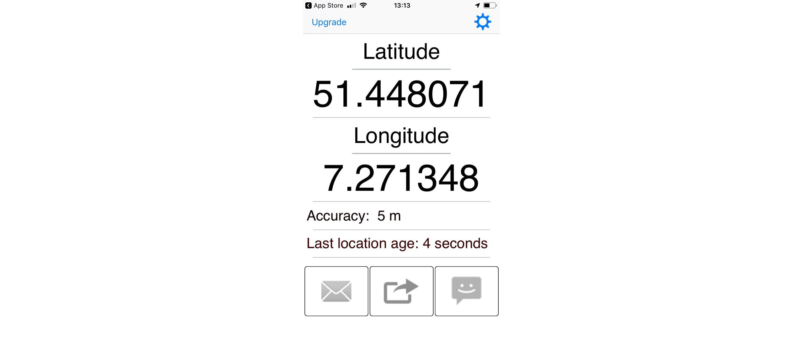
- Etwas oberhalb vom 50. Breitengrad und etwas östlich vom 7. Längengrad
20.4 Mercator-Projektion 1/2
- Breiten- und Längengrad in kartesischem Koordinatensystem
- Problem: Länder am Äquator zu klein (oder umgekehrt)
20.5 Mercator-Projektion 2/2
20.6 Robinson-Projektion

- Breiten- und Längengrad in gekrümmtem Koordinatensystem aufgetragen
- Keine Projektion im mathematischen Sinne
20.7 Lambertsche Azimutalprojektion
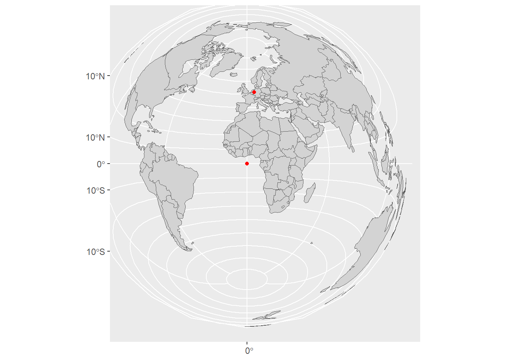
- Flächen werden korrekt abgebildet
- Weder winkel- noch längentreu
20.8 Geographische Daten: Geometrien

Simple Features
- Offener Standard für geometrische Daten (ISO 19125-1:2004)
- Entwickelt vom Open Geospatial Consortium (OGC)
- Grundlage für viele GIS-Programme
20.9 R-Paket sf (Simple Features for R)
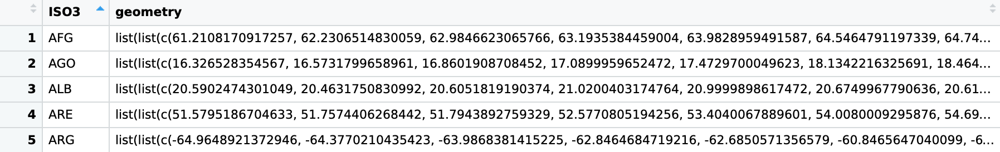
Paket sf: Simple Features in Dataframes
- Beispiel oben: Dataframe der Weltkarte (Ausschnitt)
- Ganz normaler Dataframe mit Spalten
ISO3(Ländercode)geometry(Geometrie eines Landes als Simple Feature)
- Kann mit ggplot2 geplottet werden
- Mehr Informationen hier
21 Weltkarte mit Natural Earth
21.1 Daten: Die Welt als Dataframe
d_world <- ne_countries(returnclass = "sf") |>
select(admin, adm0_a3, geometry) |>
filter(adm0_a3 != "ATA")- Weltkarte mit
ne_countries()weitere Infos hier alssf-Objekt - Benötigte Spalten mit
select()auswählen- ISO3-Codes der Länder (eindeutig)
- Geometrie
- Die Antarktis interessiert uns nicht
21.2 Plot der Weltkarte
ggplot() +
geom_sf(data = d_world)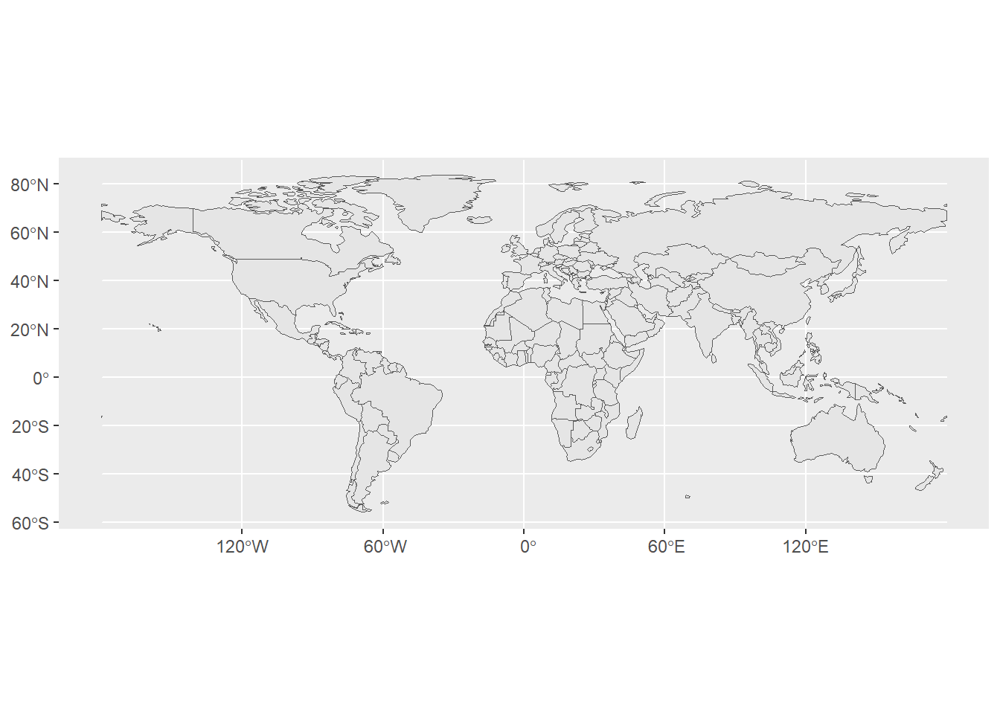
- Plotten von
sfDataframes mitgeom_sf() - Mapping für Geometrie ist eingebaut
22 Berechnung neuer Daten
22.1 Weltkarte mit Fläche der Länder 1/2
d_world_a <- d_world |>
mutate(area = as.numeric(st_area(geometry)) * 1e-6)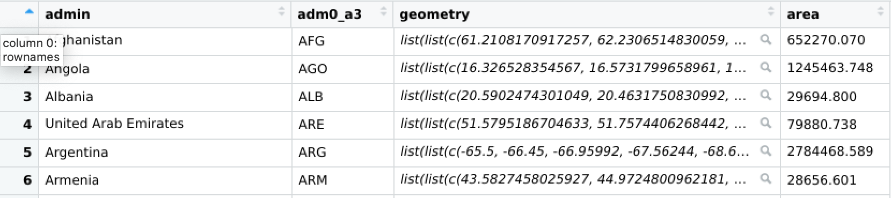
- Berechnung der Flächen mit
st_area() - Alle Funktionen im
sf-Paket beginnen mitst_(man muss nicht alles verstehen) - Einheiten entfernen mit
as.numeric()und in Quadratkilometern - Fläche Argentinien laut Wikipedia: 2.780.400 km2 (Vermutung: Karte nicht sehr genau)
22.2 Weltkarte mit Fläche der Länder 2/2
ggplot(data = d_world_a) +
geom_sf(mapping = aes(fill = area)) +
scale_fill_distiller(palette = 8, direction = 1)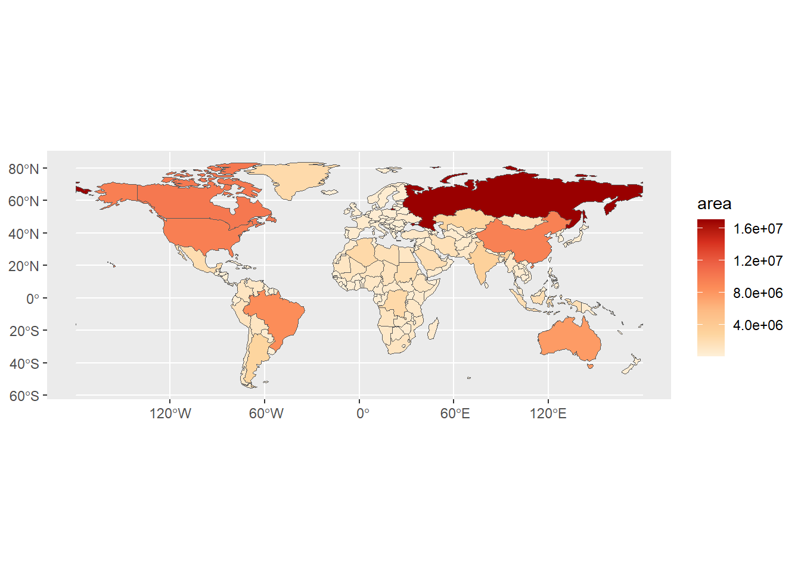
→ Eine solche Karte heißt Choroplethenkarte (auch Flächenkartogramm oder Flächenwertstufenkarte)
23 Kombination mit anderen Daten
23.1 Weltkarte mit der Lebenswerwartung
d_le <- wb_data(indicator = "SP.DYN.LE00.IN") |>
select(adm0_a3 = iso3c, date, le = SP.DYN.LE00.IN) |>
filter(!is.na(le)) |>
group_by(adm0_a3) |>
slice_max(date)- Dataframe zu Weltbankindikatoren mit
wb_data()(Paketwbstats) herunterladen- Indikator [hier] (https://data.worldbank.org heraussuchen) (Details)
- Wichtige Merkmale auswählen und passend umbenennen
- Für jedes Land den neuesten Wert heraussuchen
23.2 Dataframes miteinander verknüpfen
d_world_le <- d_world |>
left_join(d_le, by = "adm0_a3")- Funktioniert, weil beide Dataframes eine Variable
adm0_a3haben - Natürlich nicht nur mit Daten von der Weltbank
23.3 Weltkarte mit Lebenserwartung
ggplot(data = d_world_le) +
geom_sf(mapping = aes(fill = le)) +
scale_fill_distiller(palette="RdPu") 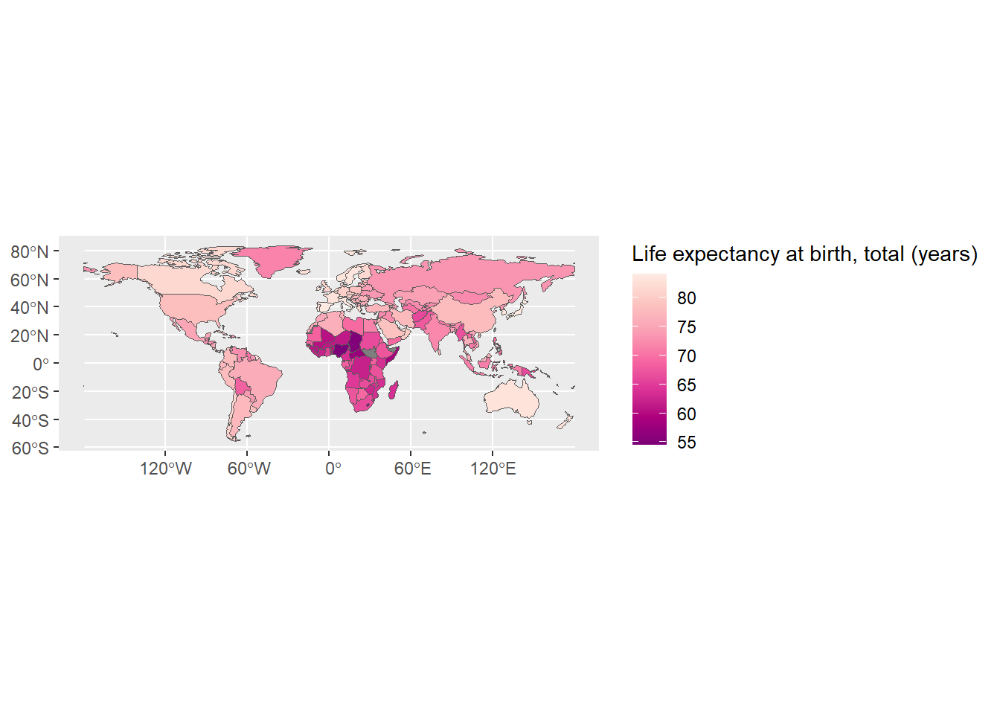
24 Werte zu einzelnen Koordinaten plotten
24.1 Erste Möglichkeit: Mit geom_point
d_cities <- read_xlsx("daten/cities.xlsx")
ggplot() + geom_sf(data = d_world) +
geom_point(data = d_cities, mapping = aes(x = long, y = lat, size = pop), color = "hotpink", show.legend = FALSE)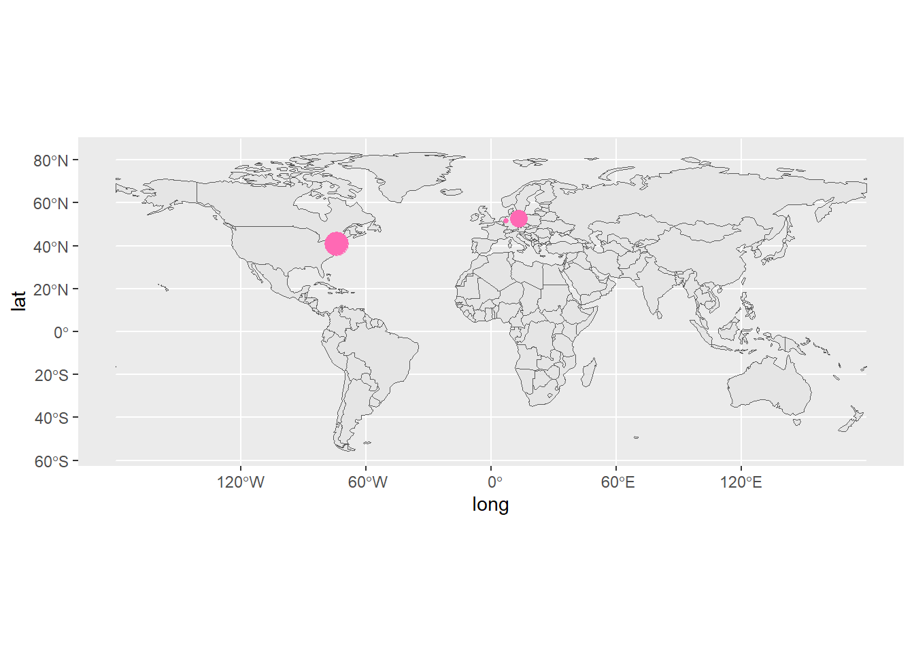
- Geodaten zu Punkten mit Breitengrad und Längengrad
- Darstellen mit
geom_point()wie gehabt - Dataframe als Parameter zu geom
- Klappt so einfach nur mit Mercator-Projektion
24.2 Besser: Dataframe konvertieren und geom_sf
d_cities_sf <- d_cities |> st_as_sf(coords = c("long", "lat"), crs = "+proj=longlat")
ggplot() + geom_sf(data = d_world) +
geom_sf(data = d_cities_sf, mapping = aes(size = pop), color = 'hotpink', show.legend = FALSE)
- Dataframe in Simple Feature Objekt konvertieren mit
st_as_sf- Mit
coordsangeben in welchen Spalten die Koordinaten stehen - Referenzkoordinatensystem angeben
- Mit
- Plotten mit
geom_sf
25 Landesgrenzen mit giscoR
25.1 Landesgrenzen 1/2
d_de <- gisco_get_nuts(country = "Germany", nuts_level = 0, resolution = 03)
d_bl <- gisco_get_nuts(country = "Germany", nuts_level = 2, resolution = 03)
d_rb <- gisco_get_nuts(country = "Germany", nuts_level = 3, resolution = 03)- GISCO: Geografisches Informationssystem der EU-Kommission
- Paket
giscoR(R-Schnittstelle zu Daten der EU) - Datensatz laden mit
gisco_get_nutscountryLandnuts_levelgibt Ebene an (Staat/Bundesländer/Regierungsbezirke)resolutionAuflösung, siehe Dokumentation- NUTS ist ein System zur Bezeichnung von Ländern
25.2 Landesgrenzen 2/2
ggplot() +
geom_sf(data = d_rb, mapping = aes(fill = NUTS_NAME), linewidth = 0.1, show.legend = FALSE) +
geom_sf(data = d_bl, fill = NA, linewidth = 0.5, color = 'white') +
geom_sf(data = d_de, fill = NA, linewidth = 0.75, color='black') +
theme_void()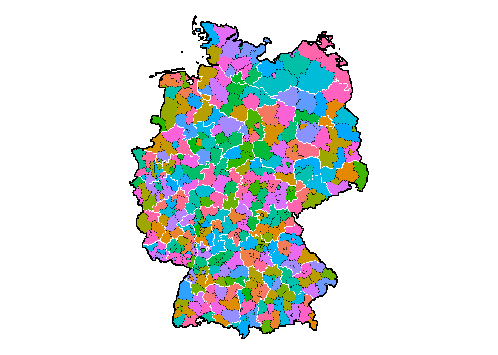
26 Open Street Map
26.1 Über Open Street Map

- Freie Alternative zu Google Maps
- Zugriff auf Daten aus eigenen Programmen
- SEHR umfangreich aber nicht ganz einfach zu nutzen
- In R mit Paket
osmdata(https://github.com/ropensci/osmdata)
26.2 Straßen in Bochum 1/2
# q <- opq(getbb('Bochum, Germany'))
# s1 <- add_osm_feature(q, key = "highway", value = "motorway") |> osmdata_sf()- Bereich festlegen mit
getbb(bb steht für Bounding Box) - Anfrage
qerzeugen mitopq - Objekte zu Anfrage hinzufügen mit
add_osm_featurekeyist die Kategorievaluesagt was genau gemeint ist- https://wiki.openstreetmap.org/wiki/Map_features
- Mit
osmdata_sfzur Verwendung mit SF aufbereiten- Objekt enthält
osm_points,osm_lines,osm_polygons, … - Dies sind die eigentlichen SF-Objekte
- Objekt enthält
26.3 Straßen in Bochum 2/2
# ggplot() +
# geom_sf(data = s1$osm_lines)- Mit
$osm_linesdie Linien heraussuchen
26.4 Karte von Bochum 1/3
# if (!file.exists("daten/strassen-bochum.RData")) {
# q <- opq(getbb('Bochum, Germany'), timeout = 600)
# s1 <- add_osm_feature(q, key = "highway", value = c("motorway", "primary", "motorway_link", "primary_link")) |> osmdata_sf()
# s2 <- add_osm_feature(q, key = "highway", value = c("secondary", "tertiary", "secondary_link", "tertiary_link")) |> osmdata_sf()
# s3 <- add_osm_feature(q, key = "highway", value = c("unclassified", "residential")) |> osmdata_sf()
# f1 <- add_osm_feature(q, key = "waterway", value = "river") |> osmdata_sf()
# u1 <- add_osm_feature(q, key = "amenity", value = "university") |> osmdata_sf()
# save(s1, s2, s3, f1, u1, file = "daten/strassen-bochum.RData")
# } else {
# load(file = "daten/strassen-bochum.RData")
# }- Mit
cmehrere Objekte aus einer Kategorie kombinieren - Daten teilweise recht umfangreich, Download kann dauern oder auch zu Abbrüchen oder Fehlermeldungen führen
- Daher: Daten einmal herunterladen, auf Festplatte speichern und ab dann nur noch einlesen
26.5 Karte von Bochum 2/3
# p <- ggplot() +
# geom_sf(data = u1$osm_polygons, color = 'orange', linewidth = 0.35) +
# geom_sf(data = f1$osm_lines, color = 'steelblue', linewidth = 0.35) +
# geom_sf(data = s3$osm_lines, color = 'light gray', linewidth = 0.15) +
# geom_sf(data = s2$osm_lines, color = 'dark gray', linewidth = 0.25) +
# geom_sf(data = s1$osm_lines, color = 'black', linewidth = 0.35) +
# coord_sf(xlim = c(7.1, 7.3), ylim = c(51.41, 51.52)) +
# theme_void()- Plot in Variable
pspeichern und auf nächster Folie ausgeben
26.6 Karte von Bochum 3/3
# p26.7 Bundesautobahnen 1/2
if (!file.exists("daten/bab.RData")) {
q <- opq(bbox = getbb("Deutschland", featuretype = "country"), timeout = 600)
d_bab_raw <- (add_osm_feature(q, key = "highway", value = "motorway") |> osmdata_sf())$osm_lines
d_bab <- d_bab_raw |>
filter(st_contains(d_de, d_bab_raw, sparse = FALSE)[1,]) |>
drop_na(ref) |>
group_by(ref) |>
summarise() |>
st_simplify(dTolerance = 100)
save(d_bab, d_bab_raw, file = "daten/bab.RData")
} else {
load(file = "daten/bab.RData")
}- Daten einmal herunterladen, aufbereiten und speichern, dann nur noch einlesen
- Aufbereiten der Daten nicht trivial (zusammenfügen, auswählen und vereinfachen)
- siehe auch GitHub
26.8 Bundesautobahnen 2/2
ggplot() +
geom_sf(data = d_bl, linewidth = 0.25) +
geom_sf(data = d_de, fill = NA, linewidth = 0.5) +
geom_sf(data = d_bab, mapping = aes(color = ref), linewidth = 0.35, show.legend = FALSE) +
theme_void()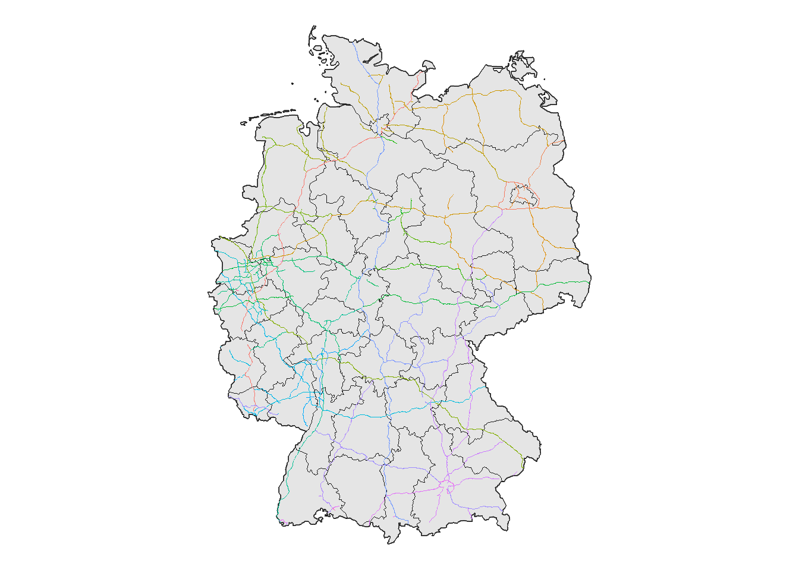
- Zeichnen zusammen mit Karte
26.9 Ausschnitt festlegen: Möglichkeit 1/2
# q <- opq(getbb('Bochum, Germany'))
# s1 <- add_osm_feature(q, key = "highway", value = "motorway") |> osmdata_sf()
# ggplot() + geom_sf(data = s1$osm_lines) + coord_sf(xlim = c(7.1, 7.3), ylim = c(51.41, 51.52))- Ausschnitt mit
coord_sffestlegen
26.10 Ausschnitt festlegen: Möglichkeit 2/2
# q <- opq(c(7.1, 51.41, 7.3, 51.52))
# s1 <- add_osm_feature(q, key = "highway", value = "motorway") |> osmdata_sf()
# ggplot() + geom_sf(data = s1$osm_lines)- Ausschnitt der Anfrage bei
opqangeben (und nicht mittelsgetbb)
26.11 Weitere hilfreiche Quelle zu OSM
- [OpenStreetMap Wiki] (https://wiki.openstreetmap.org/wiki/Map_features)
27 Shapefiles
27.1 Shapefiles
d_wkr <- st_read("daten/Wkr_25833.shp", quiet = TRUE) |> st_transform(crs = "+proj=longlat")
ggplot(data = d_wkr) + geom_sf(mapping = aes(fill = Wkr), show.legend = FALSE)
- Dateiformat Shapefile (Endung .shp): Ursprünglich für ArcView (ESRI) entwickeltes Format für vektorielle Geodaten
- Einlesen in R mit
st_read() - [Quelle] (https://daten.berlin.de/datensaetze/geometrien-der-wahlkreise-für-die-abgeordnetenhauswahl-berlin-2016)